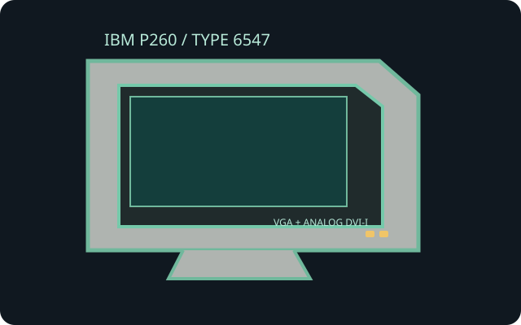

[ INDIVIDUAL COMPONENT // IBM ]
IBM P260 (Type 6547)
IBM's 21-inch-class flat Trinitron workstation monitor, identified by the P260 model and Type 6547 family label.

IDENTIFICATION: Check the complete IBM Type/model code on the rear label. No single raster is native to this CRT; valid refresh depends on the mode and horizontal scan frequency.
Specifications
| Exact product / viewable image | IBM P260, Type 6547; 21-inch nominal flat Trinitron aperture-grille tube, approximately 19.8-inch viewable image. |
|---|---|
| Pitch | 0.24 mm aperture-grille pitch. |
| Resolution and timing | No fixed native resolution. Maximum timing is up to 2048 × 1536 at 75 Hz (see exact manual mode table); scan range approximately 30–130 kHz horizontal and 48–170 Hz vertical. |
| Connectors | Model documentation lists analog video inputs: HD15/DE-15 VGA and DVI-I analog pins only. DVI-I does not mean digital DVI-D support; verify the connector panel of the individual unit and use an analog-compatible cable. |
| Power | AC mains via grounded cord; approximately 140 W active and under 1 W in standby for specified conditions. Match the rear nameplate voltage before connection. |
| Host compatibility | Use a VGA analog RGB source or an analog-capable DVI-I output with a supported timing. Digital-only DVI-D, HDMI or DisplayPort requires an active digital-to-analog converter. |
Compatibility and safety
Do not treat connector shape as proof of signal compatibility: its DVI-I analog contacts cannot accept a DVI-D stream. Record rear label, cable, selected input, mode and image geometry for an archival setup. The CRT is heavy and contains high-voltage circuitry; do not open the enclosure or handle the tube without qualified service procedures.
Documentation and sources
- IBM P260 User ManualDigitized installation/operation manual for the P260 display.
- CRT Database — IBM P260Model identification and CRT-specific reference summary.